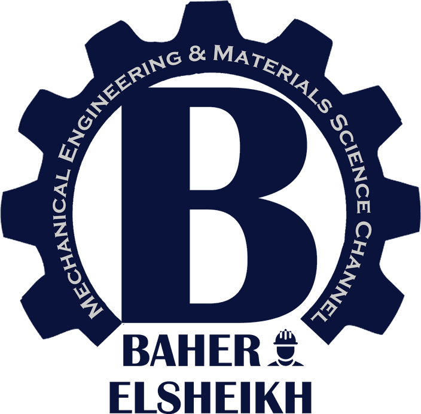
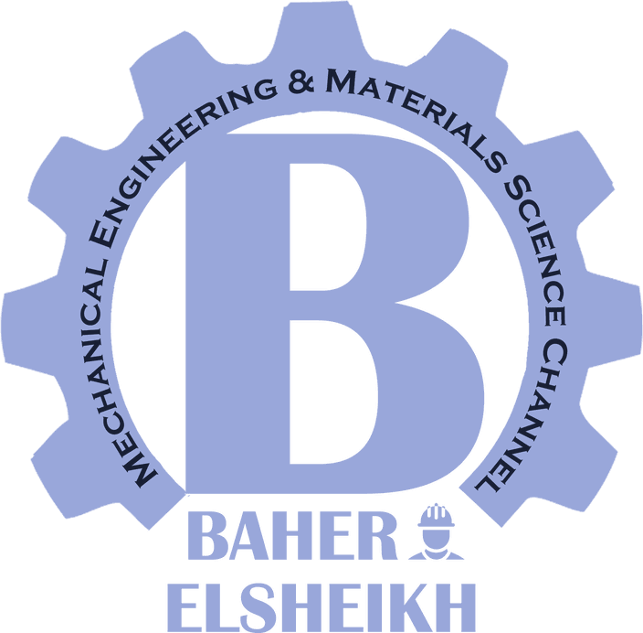

Engineering knowledge that goes beyond the textbook
Practical knowledge for engineers working with static equipment, materials, welding, inspection and asset integrity: technical articles, calculation tools with their equations shown, lessons from real equipment and the codes behind them.
By Baher Elsheikh · About


Knowledge areas
All knowledge areasArticles, documents, calculators and code explanations, organised by technical subject.
Engineering calculators
All calculatorsEach calculator shows the equations with your values substituted, step by step, with the code reference, assumptions and limitations. .
Featured insights
All articlesSelected technical content, chosen for its practical value rather than its date.
Lessons from the field
All lessonsFailure mechanisms, inspection findings and practical recommendations from real equipment.
Latest articles
All articlesCodes and standards
Standards indexQuick reference to the standards discussed on this site, with the content that applies them. Titles are for identification only; refer to the official publications.